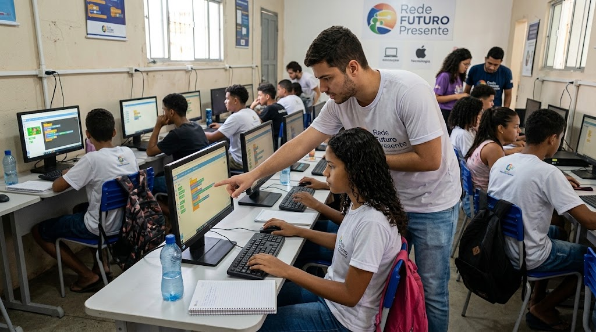

Nossa Missão e Visão
Nossa missão é democratizar o acesso à tecnologia e à educação em programação, conectando talentos periféricos a oportunidades reais de formação profissional e geração de renda.

A Rede Futuro Presente é uma organização da sociedade civil dedicada a promover a inclusão digital e a capacitação tecnológica de jovens em situação de vulnerabilidade social.
Nossa missão é democratizar o acesso à tecnologia e à educação em programação, conectando talentos periféricos a oportunidades reais de formação profissional e geração de renda.
Sede Institucional: Rua da Solidariedade, 120 - Centro, São Paulo - SP
E-mail: contato@redefuturopresente.org.br
Telefone: (11) 3000-1234